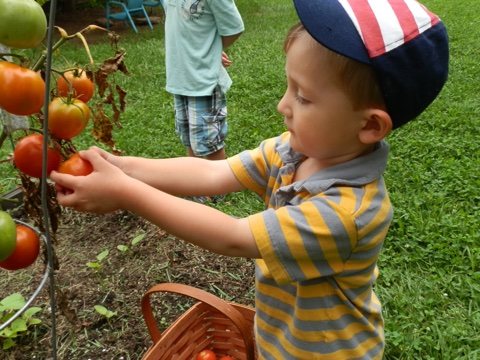
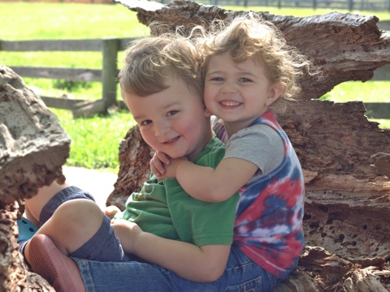
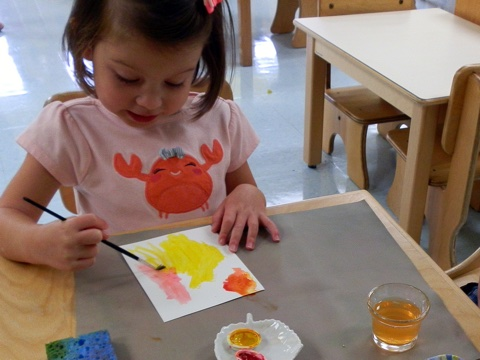

All of our programs have multi-age classes to benefit all the students included. The younger ones benefit from the mentoring of the older ones, and the older ones reinforce for themselves the concepts they’ve learned. This process results in more than memorization of facts. The outcome is true understanding and learning.
The classrooms themselves are prepared to nurture the characteristics of each age group. The furniture in the room is built to their physical size and most are made from natural materials. Everything is made to be real to replicate their home environments and to make a connection to their outside world. In addition, the rooms have plenty of natural light coming through, and the walls are not cluttered.
Another unique feature of all our Montessori environments are the materials Dr. Maria Montessori developed to kinesthetically teach the child concepts for their the children's academics and development. Many of these materials are also made with natural elements and are aesthetically pleasing, drawing the young children with their innate love of learning.
Please continue looking into each of our programs to see how these general elements are specifically developed in each age group. For additional information, please see our VMS Handbook.
One of the main focuses in the toddler classroom is to support the young child with independence. This is woven throughout the activities of the day. The child is encouraged to do whatever action they are capable of doing, which is often more than we give them credit. This is depicted in the picture with the little girl zipping up her coat and the girl washing her face, both with the needed materials at their height.
Toddlers also develop a sense of self-reliance by following through an activity from start to finish such as setting the table, scooping their cereal, pouring the milk and taking care of the final cleanup. The following video gives an inside look at a toddler carrying out this process.
The language rich environment encourages strong vocabulary skills and communication, while focused attention on gross and fine motor skills cultivates physical development and self-control. This can be seen with the boy using the animal language cards, the girl placing the balls in the correct holes in the box, and the two boys working on screwing and unscrewing nuts on the bolts.
In addition, guidance is given on listening, following directions, and using words to express oneself. One main time this is experienced is during the Tasting of the Week where a food is chosen to taste everyday that week and language is chosen to describe the experience and tastes. A comical representation is provided when lemons were the taste of the week and this little boy gives the typical reaction to the sour and tangy taste of the juices.
As mentioned in the onset of our program page, a connection to the outside world is an important part of a Montessori education. With the toddler aged child, this begins with observations, language and basic work of gardening. The little boy looking out the window can observe the birds, other animals and plants, and hear the different sounds of nature while language is used to identify the type of birds and other general descriptions of what is seen. The trough outside the window is used in the warmer seasons to grow lettuce or other plants, allowing the children to make watering their garden easy and part of their everyday work.
| Time | Description |
|---|---|
| 7:30 - 8:30 | Toddlers arrive and can have some cereal |
| 8:30 - 10:30 | Work period |
| 10:30 - 11:00 | Tasting of the Week (description above) |
| 11:00 - 11:45 | Gross motor play/recess |
| 11:45 - 12:00 | Clean up and story time |
| 1:00 - 3:00 | Nap |
| 3:00 - 3:30 | Snack |
| 3:30 - 5:30 | Gross motor play/recess/parents pick-up |
In the next stage, from age three through six (kindergarten), children strengthen coordinated movement, articulate language and grow in their independence. The materials offer opportunities to learn fundamental academic elements, while at the same time cultivating concentration and other supplementary benefits to learning. The overall goal, one that overshadows the particular goals of "curriculum areas," is offering many opportunities for the child to develop a profound self-confidence and a healthy, happy, strong self-image.
The primary classroom is known for its “practical life” materials, where the transitioning toddlers or new three year olds are initially directed. These materials help the child make connections to real life aspects of everyday living, such as folding cloths, washing a table and how to pour. In our two pictures here, one child is working on food prep, peeling a carrot, and the other child is washing the windows. The outside environment is part of the working classroom, and this demonstrates, too, that children want and love to be a part of the daily runnings of classroom or home.
Another key area in the primary classroom is the “sensorial” set of materials that visually and kinesthetically provide value for different sizes, weights, and textures. As with most of the Montessori materials, a control of error is built into the materials, allowing for the child to fix their own mistakes and also provides a built-in test. This girl is using one of the knob cylinder sets, establishing the pattern of shortest to tallest. However, as mentioned earlier, concentration skills are being developed, and the material has a direct correlation to the pincer grip used for writing.
Moving into the language materials, children progress from tracing sandpaper letters, labeling objects to writing short stories. Writing stories begins with the moveable alphabet, as seen in this picture. The child will start sounding out words with the teacher’s assistance, but eventually carries on independent word building and eventually having an entire story on their work rug. Once writing skills have developed, they will then write their moveable alphabet story on paper.
Additionally, the primary math materials provide an abundance of hands-on experience in understanding abstract mathematical concepts. The materials start with basic counting concepts, exhibiting zero means nothing and then build to the four operations, not only with math facts but carried over into multi-digit equations. Some of them also lay the groundwork for higher mathematical concepts such as squaring and algebraic formulas presented in future education.
As biology and geography lessons encourage exploration of the world around them, students are also immersed in an environment enriched with fine art on the walls and music, sparking their creative energies. Our pictures here show a girl working with some abstract art in the outside environment, a boy matching the brown bells in the key of C with the white control of error bells, and an older child showing a younger child how the spherical earth can be translated to the two dimensional maps of the earth.
In addition, guidance is given on listening, following directions, and using words to express oneself. One main time this is experienced is during the Tasting of the Week where a food is chosen to taste everyday that week and language is chosen to describe the experience and tastes. A comical representation is provided when lemons were the taste of the week and this little boy gives the typical reaction to the sour and tangy taste of the juices.
As mentioned in the onset of our program page, a connection to the outside world is an important part of a Montessori education. With the toddler aged child, this begins with observations, language and basic work of gardening. The little boy looking out the window can observe the birds, other animals and plants, and hear the different sounds of nature while language is used to identify the type of birds and other general descriptions of what is seen. The trough outside the window is used in the warmer seasons to grow lettuce or other plants, allowing the children to make watering their garden easy and part of their everyday work.
| Time | Description |
|---|---|
| 7:30 - 8:30 | Children arrive, greet the teacher, put away personal belingings, start work |
| 8:30 - 11:30 | Work period inside and outdoors, snack is available |
| 11:30 - 1:00 | Song and/or stories, lunch, recess |
| 1:00 - 5:30 | Nap for the younger children, work period inside and outdoors, snack, recess |
The elementary program is divided into two classes, upper and lower elementary. The younger group in lower elementary receive fundamental lessons in all the subject areas. Using the beautiful Montessori materials, the children learn concepts for parts of speech and sentences in language arts, all the long operations in math, plus get into fractions and beginning algebraic and geometric concepts.
Two students are categorizing living and non-living things.
The two girls are using the large bead frame for an introductory lesson at the moment, but later can be used for teaching long addition, subtraction, and 1, 2 and 3 digit multiplication.
The arts are not ignored either. Music and art lessons are woven into the day’s program, allowing the children to incorporate their creativity into their other work of history, science, biology and more. VMS is unique in the fact that it also offers care and interaction with domestic and small farm animals, as well as cooking experiences in both levels.
The language rich environment encourages strong vocabulary skills and communication, while focused attention on gross and fine motor skills cultivates physical development and self-control. This can be seen with the boy using the animal language cards, the girl placing the balls in the correct holes in the box, and the two boys working on screwing and unscrewing nuts on the bolts.
Two boys are working together with the globe and almanac for the map work and incorporating economic geography.
An older child is teaching three newer students to the class about the three states of matter, specifically regarding the properties of liquids.
The child painting has already done some research on peacocks and is now painting an illustration to go with her written work.
As the children move into the upper elementary program, the concepts learned in the lower elementary are reinforced and enhanced. While still using the Montessori materials, the students are typically moving into the abstract processes of the work. The upper elementary group is often extending their learning efforts outside the classroom by calling experts in a field or going directly to the facility or person that can help give more information.
A small group of 5th and 6th year students using the manipulative materials to find the square root of a 7-digit number.
This 5th year student researched about sequoia trees and created an artistic representation for the height of the tree to label her written material.
A 6th year and 5th year students are working together on their microscope activities.
Elementary age children are compelled to work and learn in groups and begin to interact and relate to society at large. This lower elementary student is counting the class’ money for their pizza orders for lunch on Friday’s. An upper elementary student calls the pizzeria to place the order for the whole school.
They are encouraged at all times to take responsibility for their actions, thereby developing a strong sense of personal awareness, self-respect, and time management skills. Conflict resolution is another skill fostered in the elementary program, building from the foundation set in the earlier programs. This encourages the child to see outside themselves and develop empathy for their immediate neighbors of fellow students, but extends that awareness into the community, environment and the world itself.
VMS prides itself on helping our youth develop the previously mentioned skill sets. These intangible abilities cannot be assessed on any test but are the hallmark of VMS graduates.
| Time | Description |
|---|---|
| 7:30 - 8:00 | Students arrive, greet friends and teachers, put away their belongings |
| 8:80 - 11:00 | Work period inside and outdoors, snack |
| 11:00 - 12:30 | Recess, lunch, clean-up |
| 12:30 - 3:00 | Work period, silent reading, group meetings |
| 3:00 - 3:30 | Classroom chores |
| 3:30 - 5:30 | Snack, recess, opportunities for tutoring, piano lessons, Spanish |
VMS is an Accredited Private School through the Kentucky Department of Education. VMS holds full membership with the American Montessori Society (AMS) and the elementary program is also recognized through the Association Montessori International (AMI). VMS administration and lead teaching staff are AMI or AMS certified.